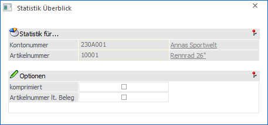
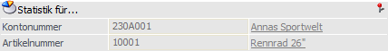
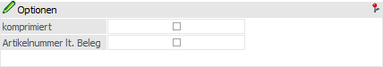

Mit Hilfe der Auswertung "Statistik Überblick" kann sich eine Übersicht der eingekauften bzw. verkauften Artikel am Bildschirm ausgegeben werden. Der Aufruf dieser Auswertung ist dabei über die folgenden Varianten möglich:
ü WinLine FAKT - Stammdaten - Konten - Personenkonten - Register "FAKT" - Button "Statistik"
ü Feld "Kontonummer" wird mit dem geladenen Personenkonto vorbelegt
ü Feld "Artikelnummer" bleibt leer
ü WinLine FAKT - Stammdaten - Artikelstamm - Artikel - Button "Statistik"
ü Feld "Kontonummer" bleibt leer
ü Feld "Artikelnummer" wird mit dem geladenen Artikel vorbelegt
ü WinLine FAKT - Erfassen - Belegerfassung - Belege erfassen - Button "Kontenstatistik"
ü Feld "Kontonummer" wird mit dem Hauptkonto des Belegs (Rechnungs- oder Lieferadresse) vorbelegt
ü Feld "Artikelnummer" bleibt leer
ü WinLine FAKT - Erfassen - Belegerfassung - Belege erfassen - Register "Mitte" - Tabellenbutton "Artikel-/Kontenstatistik"
ü Feld "Kontonummer" wird mit dem Hauptkonto des Belegs (Rechnungs- oder Lieferadresse) vorbelegt
ü Feld "Artikelnummer" wird mit dem Artikel der aktuellen Belegzeile vorbelegt
ü WinLine FAKT - Erfassen - Belegerfassung - Lagerverwaltung - Lagerbuchhaltung - Button "Artikelstatistik"
ü Feld "Kontonummer" bleibt leer
ü Feld "Artikelnummer" wird mit dem Artikel der aktuellen Erfassungszeile vorbelegt

Für die Selektion der Statistik stehen folgende Punkte zur Verfügung, wobei die Einstellung "komprimiert", "Artikelnummer lt. Beleg" und "Kalenderjahr" benutzerspezifisch gespeichert werden:
Statistik für…

Ø Kontonummer
Die Kontonummer wird automatisch vorbelegt und kann nicht manuell editiert.
Ø Artikelnummer
Die Artikelnummer wird automatisch vorbelegt und kann nicht manuell editiert.
Optionen

Ø komprimieren
Bei aktivierter Option erhalten man einen Überblick über Umsätze und Roherträge (wurde die Statistik ausgehend von einem Artikel aufgerufen werden auch noch die Mengen angezeigt) des aktuellen, sowie der vergangenen 4 Wirtschaftsjahre pro Artikel bzw. Kunde. Bei deaktivierter Option erhält man alle Einzelinformationen.
Ø Artikelnummer lt. Beleg
Wenn Artikel lagermäßig miteinander verknüpft sind (2 Artikel haben unterschiedliche Preise und Konditionen, haben aber den gleichen Lagerstand), dann wird in der Statistik der "Lagerartikel" (von wo wurde der Lagerstand abgebucht) und der "Statistikartikel" (welcher Artikel wurde verkauft) mitgeführt.
Bleibt die Option "Artikelnummer lt. Beleg" inaktiv, dann wird für die Auswertung der "Lagerartikel" verwendet. Wird die Option "Artikelnummer lt. Beleg" aktiviert, dann wird die 2. Artikelnummer - der Statistikartikel - für die Auswertung verwendet.
Ø Kalenderjahr
Durch Aktivierung der Option werden die Werte (Menge bzw. Betrag) in der Periode dargestellt, in welcher diese (lt. Datum des Belegs) auch tatsächlich erfasst wurden.
Hinweis
Diese Option steht nur für Mandanten mit abweichendem Wirtschaftsjahr, wobei der Wirtschaftsjahresbeginn in Periode 1 liegt, zur Verfügung.
Buttons
Ø Anzeigen
Durch Anwahl des Buttons "Anzeigen" wird die Statistik am Bildschirm ausgegeben.
Ø Ende
Durch Anwahl des Button "Ende" bzw. der Taste ESC wird das Fenster geschlossen.
Ø Verkauf / Einkauf
An dieser Stelle kann definiert werden, ob die Statistikzeilen aus dem Verkauf oder dem Einkauf berücksichtigt werden sollen.
Hinweis
Diese Option wird abhängig von Belegstufe bzw. dem Personenkonto automatisch vorbesetzt.